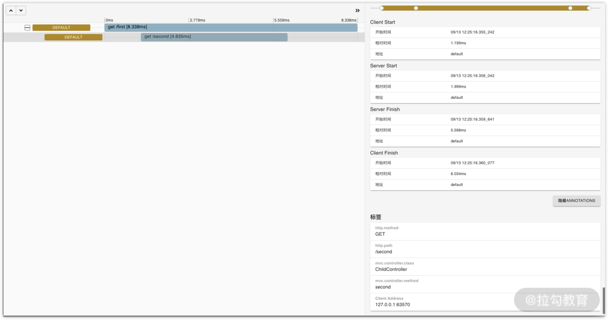

- 00 分布式链路追踪实战.md.html
- 01 数据观测：数据追踪的基石从哪里来？.md.html
- 02 系统日志：何以成为保障稳定性的关键？.md.html
- 03 日志编写：怎样才能编写“可观测”的系统日志？.md.html
- 04 统计指标：“五个九”对系统稳定的真正意义.md.html
- 05 监控指标：如何通过分析数据快速定位系统隐患？（上）.md.html
- 06 监控指标：如何通过分析数据快速定位系统隐患？（下）.md.html
- 07 指标编写：如何编写出更加了解系统的指标？.md.html
- 08 链路监控：为什么对于系统而言必不可少？.md.html
- 09 性能剖析：如何补足分布式追踪短板？.md.html
- 10 链路分析：除了观测链路，还能做什么？.md.html
- 11 黑白盒监控：系统功能与结构稳定的根基.md.html
- 12 系统告警：快速感知业务隐藏问题.md.html
- 13 告警质量：如何更好地创建告警规则和质量？.md.html
- 14 告警处理：怎样才能更好地解决问题？.md.html
- 15 日志收集：ELK 如何更高效地收集日志？.md.html
- 16 指标体系：Prometheus 如何更完美地显示指标体系？.md.html
- 17 链路追踪：Zipkin 如何进行分布式追踪？.md.html
- 18 观测分析：SkyWalking 如何把观测和分析结合起来？.md.html
- 19 云端观测：ARMS 如何进行云观测？.md.html
- 20 运维集成：内部的 OSS 系统如何与观测相结合？.md.html
- 21 结束语 未来的监控是什么样子？.md.html
- 捐赠
17 链路追踪：Zipkin 如何进行分布式追踪？
上一节，我带你了解了指标系统的原理，以及 Prometheus 是怎样进行查询和可视化的。在这一节，我将带你了解可观测性中的最后一个环，链路追踪。
作用
链路追踪可以帮助你了解系统执行时的链路情况，通过图形化的形式带你了解程序的执行流程。那么，一个比较好的链路追踪系统能够帮我们做哪些事情呢？
- 全链路记录：将系统中的业务系统、组件使用链路追踪工具观测，当发生请求或者执行定时任务时，可以记录下完整的链路信息并以可视化的形式展示。
- 快速检索：快速检索指定入口、执行路径中的链路数据，从而提高优化链路流程或性能时的效率。
- 快速定位：当线上请求处理出现问题或者数据异常时，可以快速定位到出现异常的链路，提高开发人员在定位问题时的效率。
- 便于沟通：查询问题时，经常会涉及多个组的开发人员。通过全链路的信息可视化追踪，展出时这个链路中所有涉及的项目，可以直接去询问问题项目的开发人员，快速找到问题发生时的执行情况，节省了挨个询问的时间成本。
原理
常见的链路追踪的实现原理，可以拆解成 3 个部分：链路采集、数据收集、数据查看。
链路采集是实现原理的基础，没有它我们无法进行后面的步骤；数据收集是中间的衔接环节，我们可以存储采集到的数据；数据查看则是我们最终要达到的目的，可以快速查看链路数据信息，然后分析问题。下面依次来看。
链路采集
链路采集是指从业务系统或者组件中采集实时的流量数据，将这些数据汇聚成统一的格式，然后发送到链路收集服务中。
在这里需要关注的是如何进行链路采集。目前主流的实现方式可以分为 2 种：埋点和字节码增强，这两部分我在“09 | 性能剖析：如何补足分布式追踪短板？”中有过简单的介绍，大家可以回顾一下。
我们可以通过埋点和字节码增强在采集器中的应用来看一下这两者的区别。
- 性能损耗：采集器对服务的影响尽可能做到最小。在一些高并发、高流量的场景，即使只有一点性能损耗，也可能有比较大的影响，导致服务关停链路采集工作。无论是埋点还是字节码增强，都存在一定的性能损耗，但单就节省性能来说，埋点会略优于字节码增强。不过具体实现方法的选择还是要依据具体的使用场景来判断。
- 代码侵入：对于开发人员来说，在接入链路追踪时，接入方式越简单越好，尽量减少接入流程。毕竟在使用一个组件或者功能时，我们希望链路追踪和这两者相关度越低越好，因为这样更容易解耦。
- 埋点可能存在一定的代码级侵入性，但通常也不是每个地方都会埋点，通常会结合过滤器、注解等技术来实现接入方式的通用化，降低侵入性。
- 字节码增强的依赖性更低。通常业务程序启动时无须太多的配置即可通过字节码增强的形式来进行链路追踪，比如 Java 中就可以通过 JavaAgent 的方式来做。
- 开发难易程度：两者由于实现方式不同，开发的难易程度自然也不同。
- 埋点需要各个框架中的实现方式支持类似 AOP 的扩展功能，开发相对来说较为简单。由于它是基于框架内部功能的扩展，所以不太方便进行链路追踪。
- 字节码增强是基于代码级别拦截方法调用的，所以在链路追踪时是基于代码的执行流程进行的，需要了解相关组件的实现原理才可以开发。字节码增强的开发难度相对较高，但它也会更灵活一些。
- 可扩展性：一个优秀的链路追踪系统，在链路采集层面一定会有良好的扩展性，而不是仅适用于单独的一个业务或者框架。因此，就需要这个链路追踪系统支持更多的框架，同时尽量不对系统的性能造成过高的影响。字节码增强因其实现方式的原因，可扩展性相对埋点会更高一些，但我们还是应该依据具体的实现方式和框架来选择。
你可以通过下图更直观地看到二者之间的差别。

这两种链路采集方案没有绝对的好坏之分，还要考虑项目的具体使用场景上。如果是使用开源或者商业方案时，还要考虑到与整个链路追踪系统的集成程度、支持的组件等。
数据收集
从链路采集到数据之后，我们就可以对这些数据进行解析、分析等工作，并最终存储到相应的存储引擎中，常见的引擎有 ElasticSearch、HBase、MySQL 等。
通常这时候数据会分为两类，统计数据和链路数据。统计数据可以让你了解数据的走向，链路数据则可以让你清晰地看到链路中的每一个细节。
统计数据通常指通过链路分析得到的数据，我会在“18 | 观测分析：SkyWalking 如何把观测和分析结合起来？”这一课时做详细介绍。通常这类数据与时间维度有关，这有点儿类似于我们在上一节所讲的 Prometheus，将其存储到时序数据库上更为合适。
链路数据通常指我们采集后解析成指定格式，进行链路展示的数据。通常这部分数据会采用唯一的数据 ID 来存储。我们在检索时需要采用链路 ID 或者相关的链路数据信息的方式，此时则可以考虑使用支持全文检索的存储引擎。
数据查看
数据已经存储到数据库后，我们就可以进行数据查询、基于这些数据进行告警以及其他的操作。
链路追踪中更加强调的是数据的可观测性，它可以通过图形化的形式展现出问题，因此对于可观测性有着很重要的意义，这也决定了链路追踪的数据展示是重 UI 的。
同样，我会对数据收集中的不同类型数据做简要的说明。
统计数据通常用于展示一段时间内的数值变化曲线、热力图、topN 样本数据等。此时可能需要使用图表、列表等形式来展示，前端中的 ECharts 就是目前比较常见的选择之一。
链路数据是基于请求链路的，数据与数据之间存在一定的依赖关系，此时就通常有树形图和拓扑图这 2 种展现形式。
- 树形图：链路中每一个 Span 都最少有 ID 和对应的父级 ID 信息，通过树形图的形式我们可以直观地看到一个链路是怎么执行的，服务与服务、接口与接口之间的调用关系。
- 拓扑图：拓扑图则可以为我们展现不同维度之间的依赖关系，包括服务、实例、接口之间的依赖关系。依据与此，我们可以快速梳理出这个链路依赖了哪些服务，在排查问题时可以依据此来辅助你排查问题的影响范围。
通过链路采集数据，对数据解析、分析后存储到数据库中，然后通过可视化的形式查看数据，至此，就构建了一个相对完整的链路追踪系统。
我再通过 Zipkin 带你了解实际应用中，链路追踪系统是怎么运作的。
Zipkin
Zipkin 是一款开源的链路追踪系统，它是基于我们之前提到的Dapper论文设计的，由 Twitter 公司开发贡献。
系统架构
我们先来看 Zipkin 的系统架构图，它展现了 Zipkin 的整体工作流程：

这一部分对应我在原理中讲到的链路采集、数据收集和数据查看的步骤，我们从上往下依次来看。
首先是链路采集。紫色的部分代表业务系统和组件，图中是以一个典型的 RPC 请求作为所需要追踪的链路，其中 client 为请求的发起方，分别请求了两个服务端。其中被观测的客户端和服务端会在启动的实例中增加数据上报的功能，这里的数据上报就是指从本实例中观测到的链路数据，一并上报到 Zipkin 中，传输工具常见的有 Kafka 或者 HTTP 请求。
数据传输到 Zipkin 的收集器后，会经过 Zipkin 的存储模块，存储到数据库中。目前支持的数据库有 MySQL、ElasticSearch、Cassandra 这几种类型，具体的数据库选择可以根据公司内部运维的实力评估出最适合的。
最后是数据查看。Zipkin 提供了一套完整的 UI 界面来查询，这套 UI 界面依赖于一整套完整的 API 来处理请求。
下面我会对 Zipkin 中的一些常用功能做说明。
链路采集
Zipkin 提供了多语言的支持，在官方提供的版本中，提供了目前比较主流语言的支持，比如 C#、Go、Java、JavaScript、Scala 等语言的支持。同时它支持社区提供的其他语言，具体可以参考官网说明。
在链路采集上，Zipkin 使用数据埋点的方式来进行观测。
在Java中，我们的项目一般都会集成 Spring，所以这里也可以通过spring-cloud-starter-zipkin 快速集成。通过简单的项目配置，我们就可以让项目拥有 Zipkin 的基础能力。
在介绍埋点的时候我讲过，埋点一般是通过拦截器、注解等方式注入链路观测能力，从而实现链路追踪的。
比如我们的项目使用了 OkHttp 框架，并且想将其接入到 Zipkin 来进行管理。此时，就可以通过增加拦截器的方式埋点，观测执行链路。具体可见下面这段代码：
@Bean
public OkHttpClient buildOkHttpClient(HttpTracing tracing) {
return new OkHttpClient.Builder()
.dispatcher(new Dispatcher(
tracing.tracing().currentTraceContext()
.executorService(new Dispatcher().executorService())
))
.addNetworkInterceptor(TracingInterceptor.create(tracing))
.build();
}
上述代码中，通过分发器和代理器来分别对数据的发送的请求过程来进行拦截。从而在准备进行发送请求时，将链路上下文信息进行传递。
消息传递
消息传递是在链路追踪中保持上下游服务相同链路的关键，一般会通过消息透传的方式来做到。比如上下游是通过 HTTP 的方式进行数据交换的，此时就可以在上游准备发送时的 HTTP 请求头中增加链路的上下文信息；下游接收到请求后，解析相对应的 HTTP 请求头数据，确认是否有链路上下文信息。
如果存在链路上下文信息则可以继续将链路信息传递，认定是相同链路，从而来实现链路追踪；如果没有，则可以认定为是一个全新的链路。
以刚才的 OkHttp 框架为例，我们尝试发送一个请求，然后通过 WireShark 工具观测数据内容，就可以获取到如下信息：
在这张图中，我们可以清楚地看到请求时的详细数据。
请求头中除了基础的 Header 信息以外，还会有很多以 “X-B3” 开头的内容，比如TraceId、SpanId 等关键信息，就是经由 Zipkin 产生的链路上下文信息。
数据展示
我们来看一张相对简单的链路数据展示图。图中主要模拟就是如项目架构图中类似的 client 端发送请求，server 端接收请求的链路逻辑。

左侧部分展示的是 client 端接收到了上游的请求，然后交由 server 获取数据内容的链路信息。
右侧上半部分分别显示的是客户端发送、服务端接收、服务端处理结束、客户端获取到数据中每一个节点的时间关系。
右侧下半部分展示的是当前我们选中的 Span 的标签信息，和我在“10 链路分析：除了观测链路，还能做什么？”中所讲的自定义数据十分相似，在这里你可以通过自定义属性信息来完成信息的定制化。
总结
我相信通过这篇文章的讲解，你对链路追踪系统有了一个完整的认识。你在进行性能调优或者分析问题时都是怎么样利用链路追踪的呢？欢迎你在留言区分享你的看法。
© 2019 - 2023 Liangliang Lee. Powered by gin and hexo-theme-book.